vivo X300 시리즈 춘계 발표회는 "출발, 창작하러(出发去创作)"를 주제로 윈난성 옥룡설산(玉龙雪山) 인근에서 개최되었다. vivo 부사장 황타오(黄韬)가 직접 등장해 '미러리스(微单, V단)'라는 독자적 영상 철학을 내세우며, 카메라 시스템에 전례 없는 비중을 두고 발표를 진행했다. 총 3종의 제품이 공개되었다.
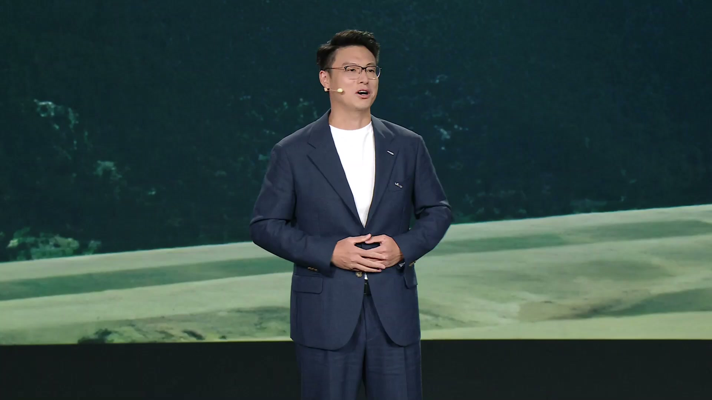
X300S는 "초능 소형 V단(超能小V单)"이라는 콘셉트로, X 시리즈 역대 가장 종합 체험이 뛰어난 제품을 표방한다. 영상 능력과 게이밍 퍼포먼스, 배터리까지 모두 잡은 올라운더 모델이다.
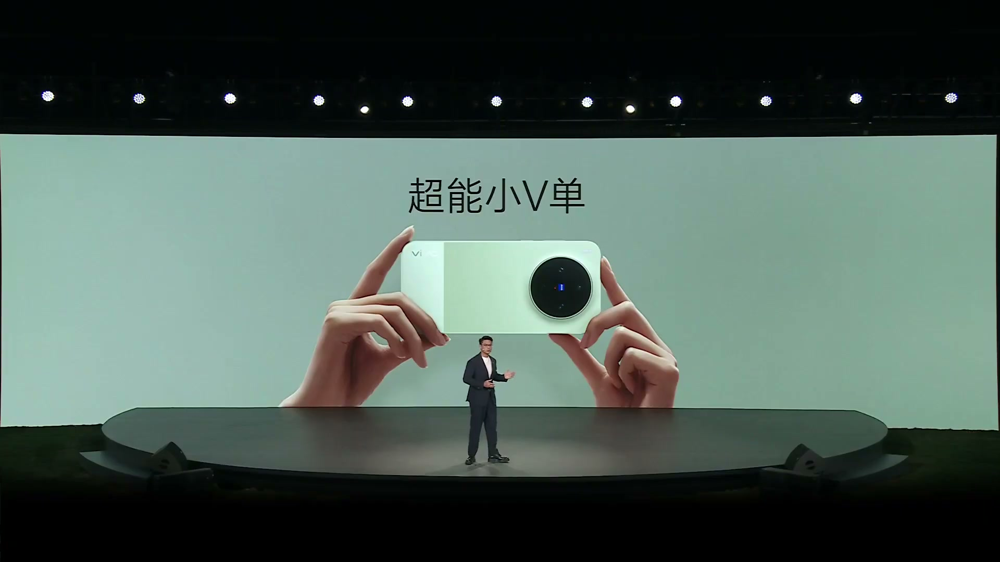
| 항목 | 사양 |
|---|---|
| 디스플레이 | 6.78인치 144Hz 플래그십 직선형 스크린, 자이스 마스터 색채 디스플레이 |
| 프로세서 | MediaTek 천기(天玑) 9500 + 블루프린트(蓝图) 영상 칩 V3+ |
| 배터리 | 7,100mAh 블루오션(蓝海) 배터리 — X 시리즈 역대 최대 |
| 충전 | 직구 공급 2.0(直驱供电 2.0) |
| 생체인식 | 초음파 지문 2.0 |
| 냉각 | 4.5K 초대형 액냉 유체 VC 방열판 |
| 게임 엔진 | iQOO Monster 초핵 엔진 (X 시리즈 최초 탑재) |
| 스피커 | 전고 대사(战鼓大师) 대칭 듀얼 스피커 PRO — 대사 1511 대형 유닛 × 2 |
| 진동 모터 | X 시리즈 역대 최대 초감 진동 모터 |
| 통신 | 4성 신호 Wi-Fi 증강, USB 3.2 Gen1, N79 |
| 컬러 | 필름 그린(胶片绿), 몽핵 퍼플(梦核紫), 실버 화이트(银白), 타이탄 블랙(钛黑) |
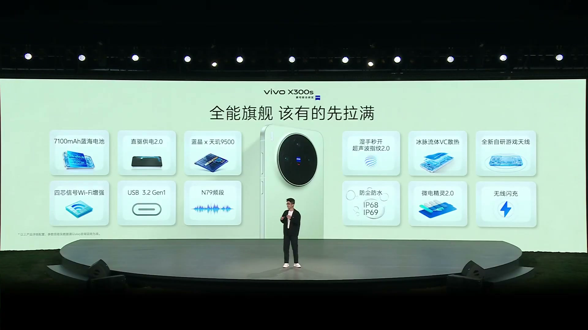
X300S는 X 시리즈 최초로 144Hz 게이밍 디스플레이를 탑재했다. 120Hz 대비 초당 20% 더 많은 프레임을 제공하며, 왕자영요(王者荣耀) 원생 144fps + 극치 화질을 지원하는 최초의 X 시리즈 기종이다. iQOO에서 검증된 Monster 초핵 엔진을 이식해, 초핵 선지 스케줄러(超核先知调度器)가 연산 수요를 예측하고, 초핵 번개 가속기(超核闪电加速器)가 화면 렌더링을 가속한다.
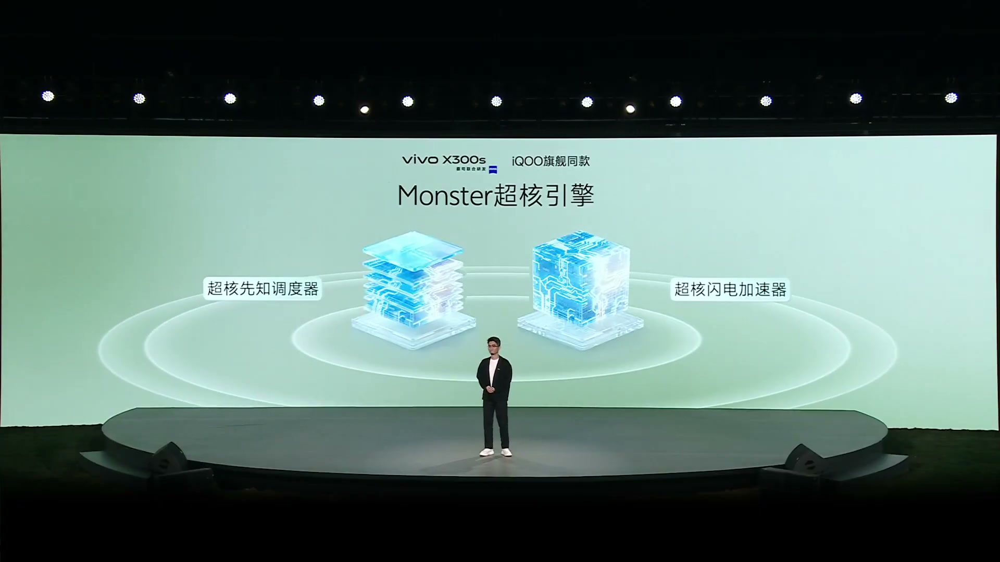
X300S는 자이스 2억 화소 슈퍼 주제를 탑재하고, 블루프린트 영상 칩 V3+를 함께 운용한다. X200 Ultra와 동일한 변초(全焦段) 변초 플래시를 채용해 물리적으로 단안반사(SLR) + 플래시 조합을 재현한다.
빛무리 융합 기술(光斑融合技术)로 원근 모두 정밀 조사하며, 신형 L1 다색 LED로 현색지수(CRI)가 14% 향상되었다. vivo 독점 플래시 인물 알고리즘은 물리적 SLR 플래시 효과를 재현한다.
야간 인물 촬영 시 얼굴은 밝고 투명하게, 머리카락에 윤기를 더하고, 배경 분리감을 극대화한다. 다수 인물 촬영 시에도 과거 플래시가 중앙 피사체만 밝히던 문제를 해결해, 모든 얼굴을 균등하게 조명한다.
10여 종의 클래식 필름 풍격을 기본 프리셋으로 제공하며, 부제(副片) 퇴색 질감과 '농울(浓郁)' 반전 필름(반전片) 풍격을 최초 공개했다. 진입 색판에서 가로 스와이프로 색상, 세로 스와이프로 톤을 조절하고, 고급 모드에서는 노출·색온 외에 소프트 라이트·광운·입자 등 5가지 특수 효과를 강약 자유 조절할 수 있다.
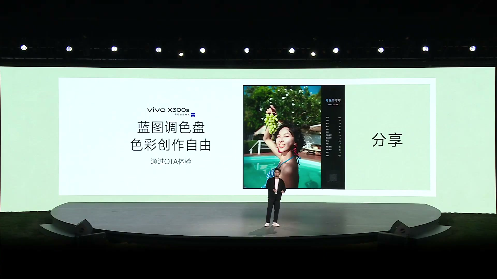
기존 AI 이미지 후처리와 근본적으로 다른 접근 — 촬영 단계에서 직접 핵심 정보를 처리하고 vivo 알고리즘을 더한다. 원클릭 직출, 공식 효과 안정성, 얼굴 보호(리얼리즘), 4K 고화질 등 4대 장점을 갖췄다. 상하이 디즈니 리조트 10주년과 협업해 8종 디즈니 캐릭터 축전 헤드밴드를 원클릭 합성하는 '기묘가니 AI 시효(奇妙佳妮AI时效)'도 탑재했다.
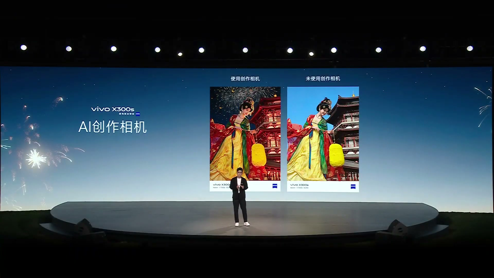
X300S의 '5번째 자이스 렌즈'로 자리잡은 구경 200(口红200) 증거경은 2세대로 진화했다. 상세대비 체적이 30% 축소되어 립스틱 크기에 가까워졌으며, 청바지 주머니에도 들어갈 정도의 휴대성을 확보했다. G2의 신규 광학 설계로 렌즈는 13장에서 15장으로 늘었지만, 더 작은 체적에서 최적 광학 성능을 구현한다. X300S + G2 조합은 자이스 APO 기준을 충족한다.
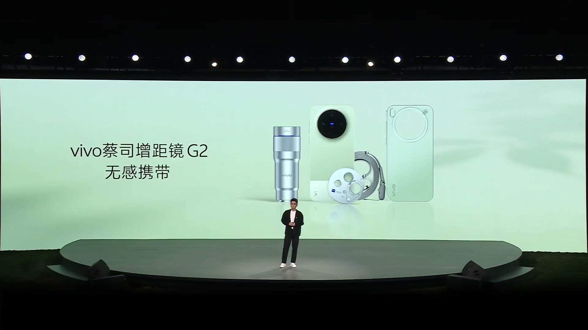
필름 그린(胶片绿)을 대표색으로, 장식적이지 않되 약간의 회색 톤과 침전감을 가진 올드 렌즈의 유윤감(油润感)을 표현했다. 부유형 물방울 렌즈 데코, 운단사(云锻纱) 유리 후면을 채용하며 필름 감성의 커스터마이징 UI 테마도 지원한다.
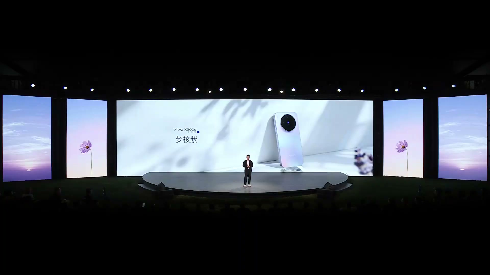
6,000위안 이하 버전 국가보조금(国补) 500위안 적용 가능 | 구경 200 증거경: ¥990 | 촬영가 세트: ¥7,999
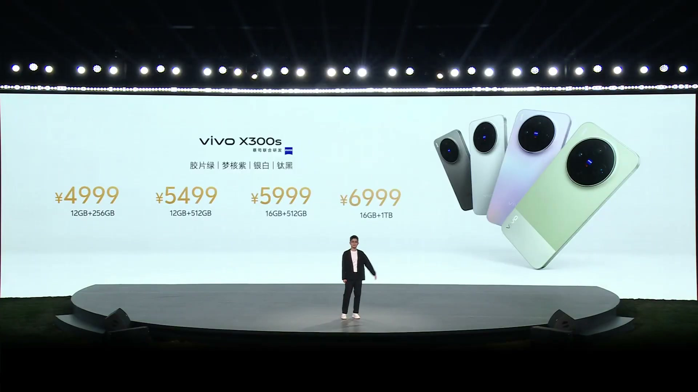
X300 Ultra는 vivo가 "미러리스(微单)"라 부르는 영상 신물종(影像新物种)이다. 전통적인 카메라폰이 아닌, 카메라와 스마트폰의 장점을 겸비한 전문 창작 도구를 지향한다. 핵심 철학은 단순한 고화질이 아니라, "핵심 초점 거리(关键焦段)에서의 고화질" — 즉, 진정한 창작의 자유를 위해 14mm부터 400mm까지 모든 황금 초점 거리에서 대작을 뽑아낼 수 있어야 한다는 것이다.
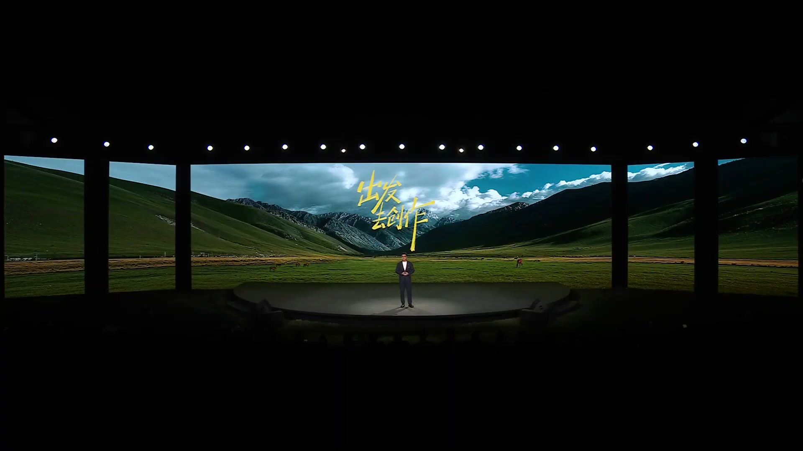
대부분의 플래그십 스마트폰은 주제(메인) 한두 개 초점 거리에서만 높은 화질을 보장한다. 나머지 초점 거리는 디지털 크롭에 의존해 화질이 급격히 저하된다. vivo 미러리스는 전문 카메라처럼 기체(바디) + 렌즈군(镜头群) 구조를 채택해, 14mm·35mm·85mm·200mm·400mm 모든 황금 초점 거리에서 광학 직출 고화질을 구현한다.
X300 Ultra의 카메라 시스템은 "자이스 마스터 렌즈군"이라는 이름 아래, 주제도 부제도 없이 모든 렌즈가 주인공인 구조로 설계되었다. 전문 카메라의 렌즈 교환식 시스템처럼, 5개 렌즈가 통일된 설계 사상 아래 함께 만들어졌다.
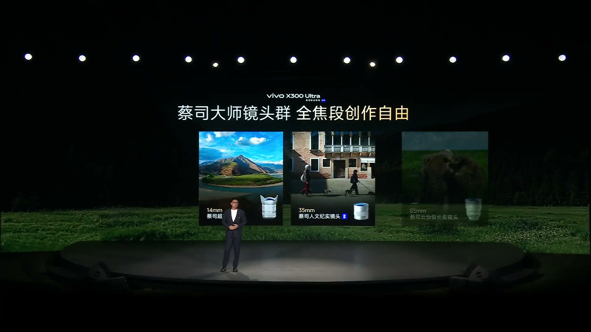
업계에서 가장 홀대받던 초광각에 혁명을 일으켰다. 일반 플래그십이 초광각에 1/2인치 이하 센서를 쓰는 데 반해, 미러리스는 1/1.28인치 대형 센서를 투입했다 — 일반 초광각 대비 감광 면적이 약 3배 이상이다. 많은 플래그십이 메인으로 쓰는 센서를 초광각에 배치한 것이다.
풍광 사진의 절대 주전장이면서, 전문 인물 사진가들이 강렬한 원근감을 위해 선호하는 초점 거리이기도 하다. 영상 촬영에서는 EIS 전자 손떨림 보정 시 크롭 문제를 근본적으로 해결한다 — 화질 좋은 초광각 + EIS = 넓은 화각과 화질, 방진을 동시에 충족한다.
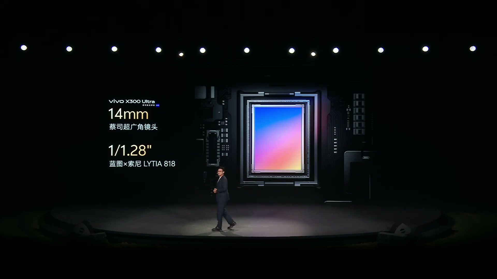
과거 10년간 스마트폰 메인 카메라는 35mm에서 24mm로 이동했다. 24mm가 얇은 기체 설계에 유리했기 때문이지, 창작적으로 최적이기 때문은 아니었다. 35mm는 환경을 보존하면서도 주제를 놓치지 않는 '가장 편한 초점 거리'로, 전문 사진가들이 가장 선호하는 화각이다.
미러리스는 업계 최초 소니 AOYT901 센서를 1/1.12인치로 탑재했다. 24mm 메인에서 35mm로 디지털 크롭하면 센서의 47%만 사용하지만, 미러리스는 100% 원생 광학 직출 35mm를 제공한다. 더불어 35mm 기반 2차 구도로 업계 최고 수준의 50mm 화질도 동시에 얻을 수 있다 — 하나의 렌즈, 두 가지 고품질 표현이다.
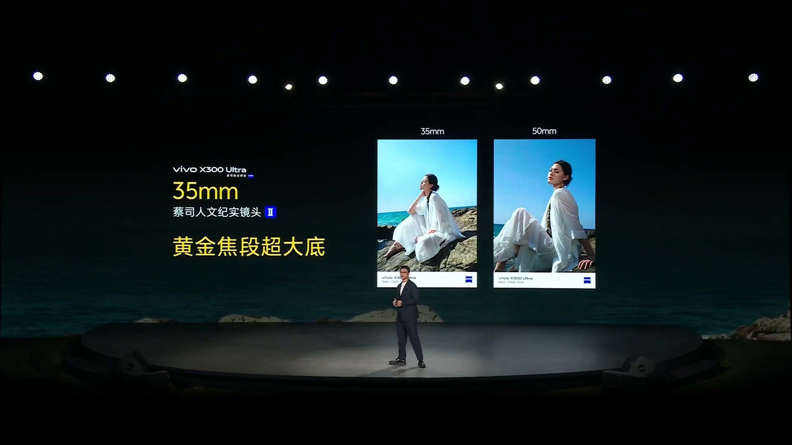
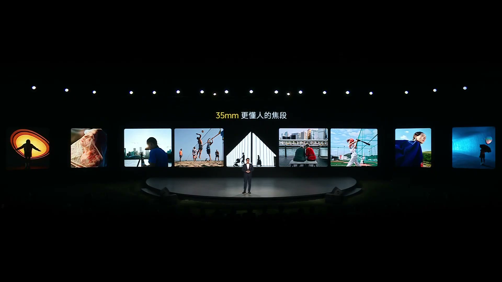
vivo의 대표적 강점인 망원 렌즈가 5세대로 진화했다. 핵심 메시지는 "망원을 논할 때 반드시 스냅 촬영을 논해야 한다(聊长焦一定要聊抓拍)"는 것이다.
정지된 건물을 찍어 확대해 글자를 읽는 '사이버 훔쳐보기(赛博偷窥狂)'는 무의미하다. 진정한 망원의 가치는 아이돌의 감정 폭발 순간, 스포츠 선수의 풀스윙, 초원의 질주하는 야생마를 포착하는 데 있다 — 이 모든 장면은 움직이고 있다.
글로벌 최초 삼성 HP0 대형 센서를 탑재하고, vivo 자체 개발 60fps 고프레임 시스템 통로 + 블루프린트 고속 추적 AF 엔진 + NICE 알고리즘 엔진이 협업해 초당 60회 자동 초점을 달성한다 — 이전 세대의 정확히 2배이며, 업계 최선두 수준이다. 기본 포인트에서 22종 일반 운동 장면의 종합 스냅 성공률 86%를 기록한다.
망원에서 방진은 극도로 중요하지만, 무거운 렌즈 모듈을 통째로 움직여야 하기에 기술적으로 매우 어렵다. 업계 일반 수준이 0.7~1°, X200 Ultra가 업계 최고인 1.2°였던 것에 비해, X300 Ultra는 3° OIS로 비약적 발전을 이뤘다. 이는 CIPA 7.0 등급으로, "손은 떨리는데, 마음은 이미 안정(手还在抖, 心却已经稳了)" 수준의 방진력이다.
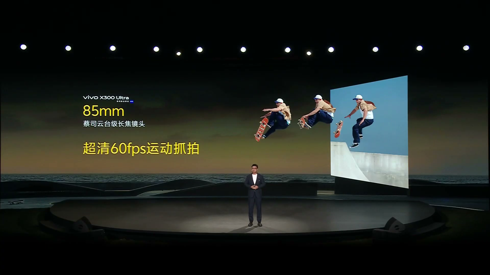
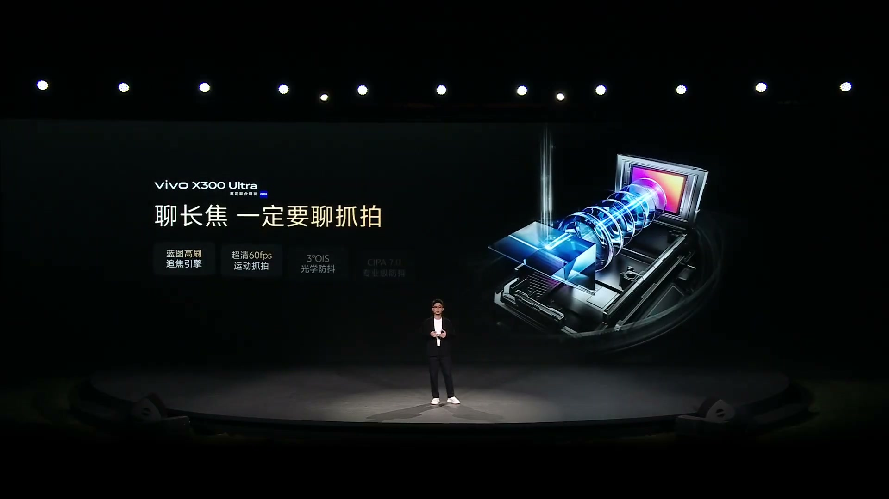
X300S와 X300 Ultra 모두에서 사용 가능한 립스틱 크기의 200mm 증거경이다. X300 Ultra에서는 대포 400과 함께 렌즈군의 일원으로 통합 설계되어, 기본 카메라의 모든 모드·필터·풍격이 장착 즉시 동일하게 적용된다.
증거경에도 Ultra가 붙었다. 400mm 등효 초장초로, 85mm 짐벌급 망원의 모든 능력(대형 센서·추적 AF·3°OIS)을 그대로 계승한다. 17.4배 화질에서도 2억 화소 직출이 가능하며, 670m 거리의 사자 얼굴 털결까지 포착하는 시연을 보여주었다.
전세대 대비 초점 거리는 2배인데, 길이는 겨우 5mm만 증가했다. 85mm의 대형 센서·추적 AF·방진이 완전히 연동되므로, 단순한 확대 액세서리가 아니라 렌즈군의 정규 일원이다.
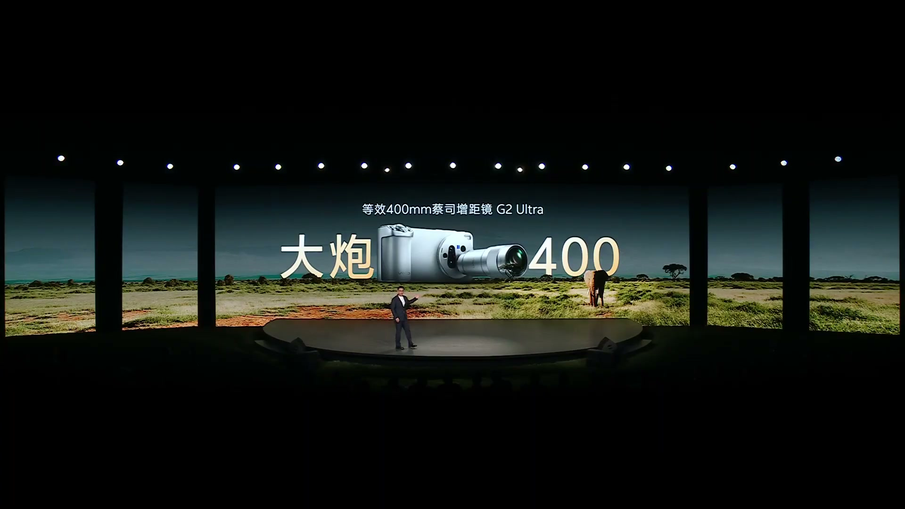
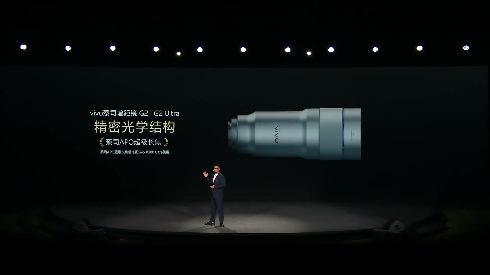
전문 카메라 업계에서 반복 검증된 기준인 2,400만 화소를 넘어, 미러리스는 전 초점 거리·전 밝기 구간에서 직출 2,500만 화소를 보장한다. 14mm부터 400mm까지 어떤 초점 거리든, 어떤 조명이든, 셔터를 누르면 즉시 납품 가능한 수준의 이미지를 얻을 수 있다.
자이스 마스터 렌즈군의 5개 렌즈 모두가 충족하는 5대 기준: ① 전 황금 초점 거리 ② 전 고화질 ③ 전 전문급 방진 ④ 전 초점 거리 직출 2,500만 화소 ⑤ 자이스 APO 인증
사진만이 아닌, 영상 역시 미러리스의 핵심 영역이다. 발표회 현장에서는 13대의 X300 Ultra만으로 전체 무대를 촬영(스테디캠 1대, 크레인 2대, 레일 2대, 핸드헬드 2대, 고정 1대, 정면 3대, 크레인 1대 등)하는 것으로 실력을 증명했다.
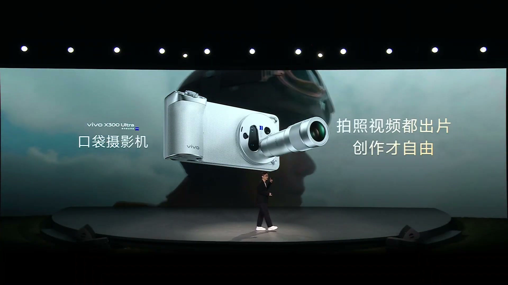
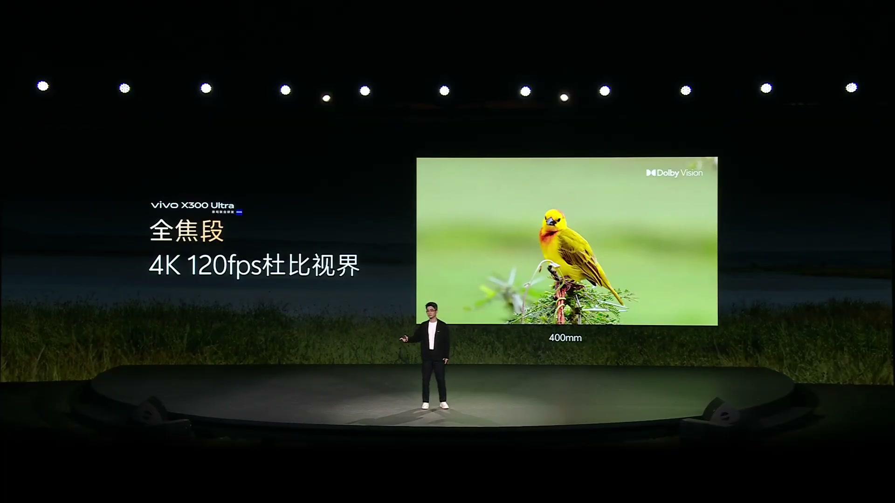
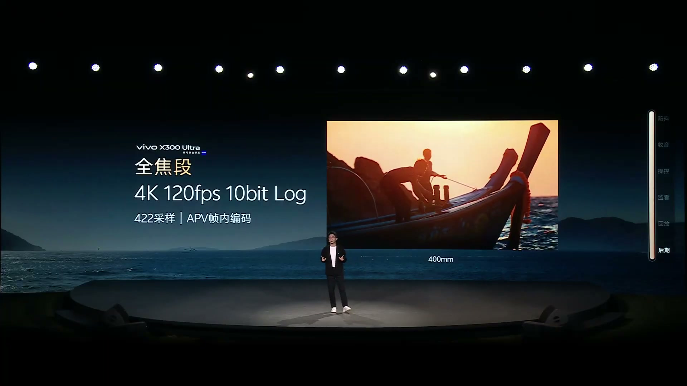
정적 영상에서 추구하는 부드러운 카메라 감성을 영상에도 적용했다. "블루프린트 원생 색채 비디오"는 과도한 밝기 보정을 지양하고, 톤 질서를 유지하며, 샤프닝·도말을 최소화해 화면에 호흡감(呼吸感)을 부여한다. 8종 고품질 비디오 색채 풍격 프리셋을 제공하며, 모두 전 초점 거리 4K 60fps 돌비 비전 HDR을 지원한다.
Film Style(전형적 영화감)은 2.4:1 와이드 스크린 화폭, 24fps 클래식 프레임, 동적 블러, 필름의 광운과 입자감을 조합해 클래식 영화의 시각 언어를 직출한다. Film Look(현대적 영화감)은 16:9 비율 + 60fps로 소셜 미디어에 최적화된 변형이다.
미러리스 특유의 "비스킷 헤드(饼干头)" 렌즈 데코와 클래식 널링(滚花纹理) 패턴을 배면에 적용했다. 정면에는 사용자들이 간절히 요청해온 '직선 디스플레이(直屏)'를 채용했다.
미러리스의 시그니처 블랙
설산 아래 복귀한 클래식 실버 — 전문 영상 핸들 세트 지원
전문 영상 핸들 세트(专业影像手柄套装)를 새롭게 설계해, 보다 극치의 조작 경험을 원하는 창작자를 위해 준비했다. 배우 장기명(蒋奇明)이 체험관으로 등장해, vivo VOTD(Vivo Outfit of The Day) 스타일의 크로스바디 촬영을 시연했다.
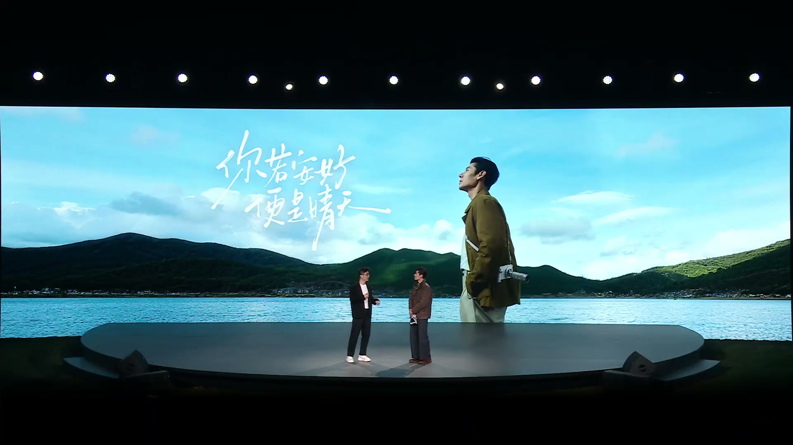
미러리스가 카메라 능력에 올인한 만큼, 스마트폰으로서의 기본 사양도 타협 없이 갖췄다. "최고급 칩, 초강 배터리, 유려한 시스템 — 플래그십에 필요한 것은 전부 있다(顶级芯片·超强续航·流畅系统, 旗舰该有的全都有)"고 강조했다.
구경 200(口红200): X300 Ultra에도 호환 | 촬영가 세트(16+1TB 본체 + 증거경 2종 + 핸들 + 삼각대 링 + 전용 촬영 백): ¥11,999 (정가 ¥12,999)
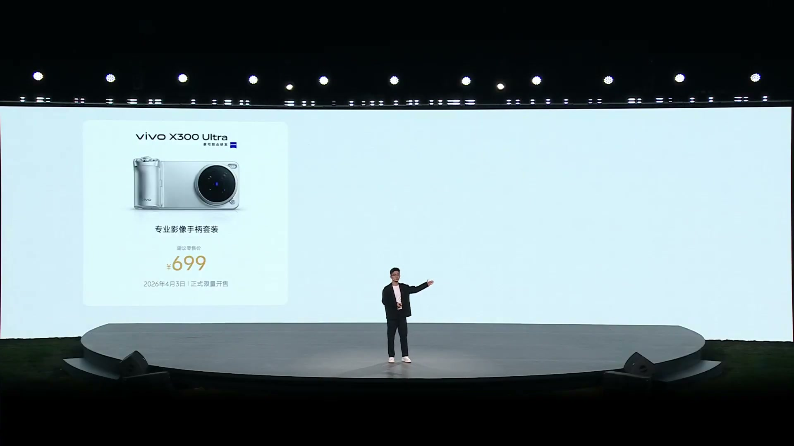
미러리스에서 독점 제공하는 색채 창작 자유: 블랙&화이트 레시피부터 사용자가 직접 조합한 색채 비법을 QR코드로 전 세계 사용자와 공유할 수 있다. X300S의 블루프린트 조색판과 동일한 생태계를 공유하며, 신품 체험관 종추희(钟楚曦)가 개인 색채 배합 "추희의 주말(楚曦的周末)"을 최초 공개했다.
단순한 완성 이미지 위 필터가 아니라, 전단(前端) 원본 데이터 단계부터 시작하는 저층 색채 재구축이다. vivo 색채 과학 기반의 전자연 비디오 색채 톤 매핑 파이프라인으로, 색상 전환이 더 매끄럽고 화질 손실이 없다.
발표회 후반부에 vivo Pad 6 Pro도 간략히 공개되었다. "4K 신예 생산력 플래그십 태블릿"을 표방하며, 4K 초분(超分) FPS 게임을 지원하고, 디자인 도면·시공 도면 작업에 최적화된 기능을 갖췄다.
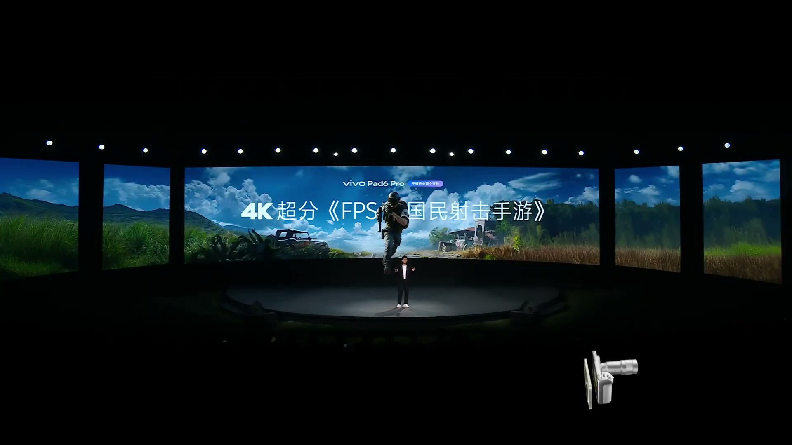
vivo X300 시리즈 춘계 발표회는 역대 가장 '카메라 중심적'인 스마트폰 발표회 중 하나였다. 약 100분의 발표 시간 중 80% 이상을 카메라 시스템에 할애하며, "초점 거리를 논하지 않고 화질만 논하는 것은 무의미하다"는 메시지를 일관되게 전달했다.
X300S는 자이스 영상력과 iQOO의 게이밍 DNA를 결합한 올라운더로, 구경 200 증거경과 블루프린트 조색판이라는 독보적 기능을 갖추었다. X300 Ultra는 14mm~400mm 자이스 마스터 렌즈군으로, 스마트폰과 카메라의 경계를 허무는 '영상 신물종'을 목표로 한다. 특히 85mm 제5세대 멸패 망원의 초당 60회 AF와 3°OIS(CIPA 7.0), 전 초점 거리 4K 120fps 10bit Log 직출은 스마트폰 영상 분야에서 새로운 기준을 세운 것으로 평가할 수 있다.
다만, 에코시스템(증거경, 핸들, 삼각대 등)까지 갖추면 가격이 상당히 올라가며, X300 Ultra 촬영가 풀세트가 ¥11,999에 달하는 점은 실질적으로 미러리스 카메라와 가격대가 겹치는 영역이다. vivo는 이를 "편리성 + 직출 + 공유"라는 스마트폰만의 가치로 차별화하고 있다.
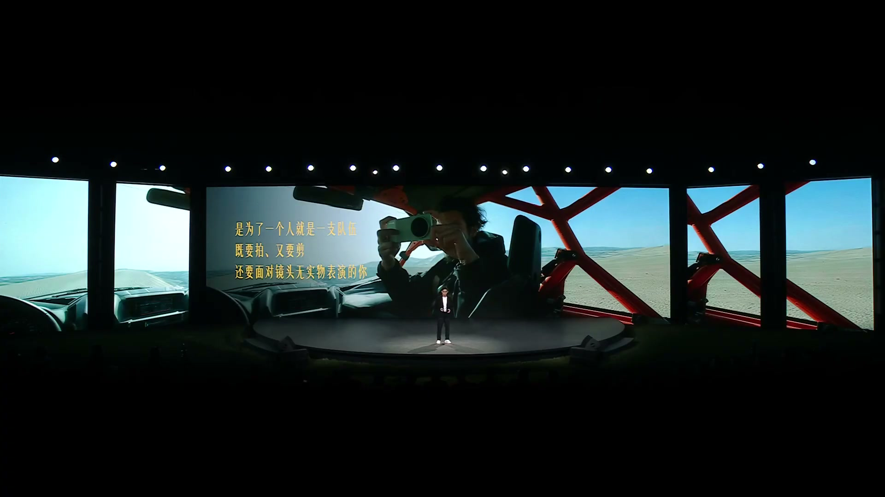